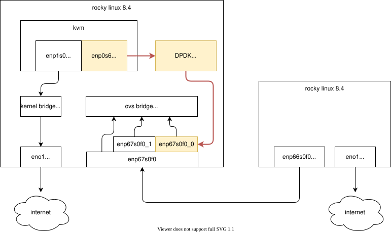
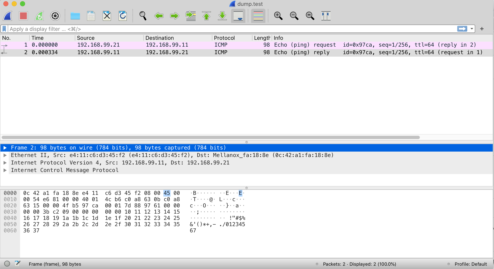
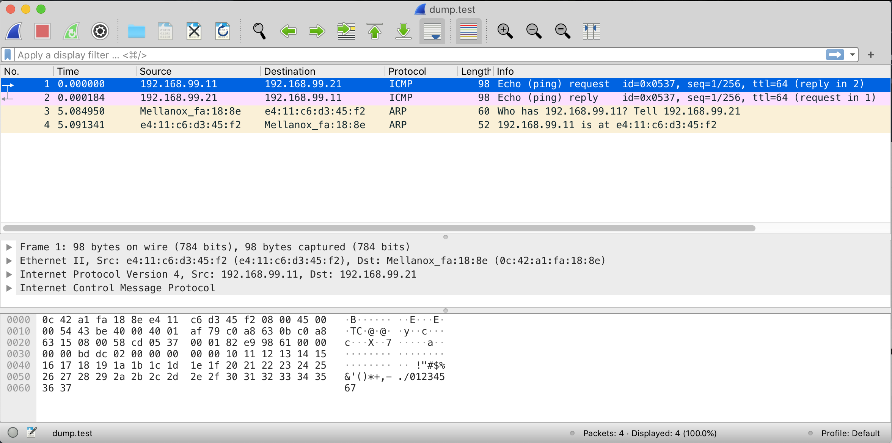

Mellanox CX6 vdpa 硬件卸载 ovs-kernel 方式
本文来讲解，使用mellanox CX6 dx 网卡，实现vdpa硬件卸载。
视频讲解:
vdpa 硬件卸载介绍
既然说到了vdpa卸载，那么我们先简单介绍一下他是什么。
vDPA (virtio data path acceleration) 是一个内核框架，在2020年正式引入内核，NIC厂家会做vDPA网卡，意思是datapath遵循virtio规范，而控制面由厂家驱动提供。
以下是vDPA在虚拟机平台部署时的架构图：
以下是vDPA在k8s平台中部署是的架构图：
上面的架构图，是借用红帽介绍vdpa背景的文章。我们这次的实验，是按照mellanox的文档来做，从mellanox角度看，vdpa有2种方式来做
- 配置ovs-dpdk, ovs配置vdpa端口，同时创建socket。vm通过socket挂载vdpa设备。
- 配置ovs-kernel，启动vdpa-dpdk程序，同时创建socket。vm通过socket挂载vdpa设备。
第一种方法，由于ovs-dpdk，mellanox官方文档说只支持到rhel/centos 7 ， 我们的环境是rhel/rocky 8.4，所以我们用后面一种方法。
在这里，背景介绍的很简单，以下是参考链接，可以更深入的学习：
- Introduction to vDPA kernel framework
- How vhost-user came into being: Virtio-networking and DPDK
- A journey to the vhost-users realm
- How deep does the vDPA rabbit hole go?
- Achieving network wirespeed in an open standard manner: introducing vDPA
- vDPA hands on: The proof is in the pudding
- vdpa-deployment from redhat-nfvpe
- Virtio-networking series from redhat blog
- How vDPA can help network service providers simplify CNF/VNF certification
- vDPA : On the road to production
- vDPA原理和实现
- VirtIO and TC
有一个dpdk特殊概念，vf representor，dpdk文档有说，简单理解，是给控制面准备的vf的分身。
- https://doc.dpdk.org/guides-18.11/prog_guide/switch_representation.html
.-------------. .-------------. .-------------.
| hypervisor | | VM 1 | | VM 2 |
| application | | application | | application |
`--+---+---+--' `----------+--' `--+----------'
| | | | |
| | `-------------------. | |
| `---------. | | |
| | | | |
.-----+-----. .-----+-----. .-----+-----. | |
| port_id 3 | | port_id 4 | | port_id 5 | | |
`-----+-----' `-----+-----' `-----+-----' | |
| | | | |
.-+--. .-----+-----. .-----+-----. .---+--. .--+---.
| PF | | VF 1 rep. | | VF 2 rep. | | VF 1 | | VF 2 |
`-+--' `-----+-----' `-----+-----' `---+--' `--+---'
| | | | |
| | .---------' | |
`-----. | | .-----------------' |
| | | | .---------------------'
| | | | |
.--+-------+---+---+---+--.
| managed interconnection |
`------------+------------'
|
.----+-----.
| physical |
| port 0 |
`----------'本次实验的架构图如下：

系统安装
export VAR_HOST='rl_panlab105'
# 按照完了操作系统以后，添加kernel参数，主要是intel_iommu=on iommu=pt，然后重启
cp /etc/default/grub /etc/default/grub.bak
sed -i "/GRUB_CMDLINE_LINUX/s/resume=[^[:space:]]*//" /etc/default/grub
sed -i "/GRUB_CMDLINE_LINUX/s/rd.lvm.lv=${VAR_HOST}\\/swap//" /etc/default/grub
# https://unix.stackexchange.com/questions/403706/sed-insert-text-after-nth-character-preceding-following-a-given-string
sed -i '/GRUB_CMDLINE_LINUX/s/"/ intel_iommu=on iommu=pt default_hugepagesz=1G hugepagesz=1G hugepages=16 rdblacklist=nouveau"/2' /etc/default/grub
grub2-mkconfig -o /boot/efi/EFI/rocky/grub.cfg
grub2-mkconfig -o /boot/grub2/grub.cfg
# 添加kvm cpu host mode模式的支持，可以不做
cat << EOF > /etc/modprobe.d/kvm-nested.conf
options kvm_intel nested=1
options kvm-intel enable_shadow_vmcs=1
options kvm-intel enable_apicv=1
options kvm-intel ept=1
EOF
# 默认的操作系统安装，有swap, home分区，我们是测试系统，全都删了吧。
umount /home
swapoff /dev/$VAR_HOST/swap
cp /etc/fstab /etc/fstab.bak
sed -i 's/^[^#]*home/#&/' /etc/fstab
sed -i 's/^[^#]*swap/#&/' /etc/fstab
lvremove -f /dev/$VAR_HOST/home
lvremove -f /dev/$VAR_HOST/swap
lvextend -l +100%FREE /dev/$VAR_HOST/root
xfs_growfs /dev/$VAR_HOST/root
# 至此，开始安装网卡驱动
# 103 driver install
# https://www.mellanox.com/products/infiniband-drivers/linux/mlnx_ofed
mkdir -p /data/down/
cd /data/down/
dnf groupinstall -y 'Development Tools'
dnf groupinstall -y "Server with GUI"
wget https://www.mellanox.com/downloads/ofed/MLNX_OFED-5.4-3.0.3.0/MLNX_OFED_LINUX-5.4-3.0.3.0-rhel8.4-x86_64.tgz
tar zvxf *.tgz
cd /data/down/MLNX_OFED_LINUX-5.4-3.0.3.0-rhel8.4-x86_64
dnf install -y tcl tk kernel-modules-extra python36 make gcc-gfortran tcsh unbound
./mlnxofedinstall --all --force --distro rhel8.4
# ./mlnxofedinstall --dpdk --ovs-dpdk --upstream-libs --add-kernel-support --force --distro rhel8.4
reboot
systemctl enable --now mst
systemctl enable --now openibd
cat << EOF > /etc/yum.repos.d/mlx.repo
[mlnx_ofed]
name=MLNX_OFED Repository
baseurl=file:///data/down/MLNX_OFED_LINUX-5.4-3.0.3.0-rhel8.4-x86_64/RPMS
enabled=1
gpgcheck=0
EOF
dnf makecache
# 开始安装dpdk相关的软件
mkdir -p /data/soft
cd /data/soft
dnf config-manager --set-enabled powertools
dnf install -y ninja-build meson
# 装mlnx版本的dpdk组件和ovs软件
# dnf group list
# dnf groupinstall -y 'Development Tools'
# install dpdk
dnf install -y mlnx-dpdk mlnx-dpdk-devel numactl-devel openvswitch openvswitch-selinux-policy libnl3-devel openssl-devel zlib-devel libpcap-devel elfutils-libelf-devel
# https://doc.dpdk.org/guides/linux_gsg/sys_reqs.html#compilation-of-the-dpdk
pip3 install --user pyelftools
systemctl enable --now openvswitch
export PATH=$PATH:/opt/mellanox/dpdk/bin/
echo 'export PATH=$PATH:/opt/mellanox/dpdk/bin/' >> ~/.bash_profile
# 编译上游的dpdk软件包，因为我们要用里面的vdpa sample程序
cd /data/soft/
wget https://fast.dpdk.org/rel/dpdk-20.11.3.tar.xz
tar vxf dpdk-20.11.3.tar.xz
# https://core.dpdk.org/doc/quick-start/
cd /data/soft/dpdk-stable-20.11.3/
# meson -Dexamples=all build
meson --reconfigure -Dexamples=all build
ninja -C build
export PKG_CONFIG_PATH=/opt/mellanox/dpdk/lib64/pkgconfig/
cd /data/soft/dpdk-stable-20.11.3/examples/vdpa
make -j
# 按照kvm相关软件包
# install kvm with qemu
# dnf -y groupinstall "Server with GUI"
dnf -y install qemu-kvm libvirt libguestfs-tools virt-install virt-viewer virt-manager tigervnc-server
systemctl disable --now firewalld
systemctl enable --now libvirtd
# 最后，设置mlx网卡参数，激活sriov
# pci地址，使用 lspci -D | grep -i mell 或者 lshw -c network -businfo 得到
lspci -D | grep -i mell
# 0000:04:00.0 Ethernet controller: Mellanox Technologies MT2892 Family [ConnectX-6 Dx]
# 0000:04:00.1 Ethernet controller: Mellanox Technologies MT2892 Family [ConnectX-6 Dx]
lshw -c network -businfo
# Bus info Device Class Description
# =======================================================
# pci@0000:02:00.0 eno3 network NetXtreme BCM5720 2-port Gigabit Ethernet PCIe
# pci@0000:02:00.1 eno4 network NetXtreme BCM5720 2-port Gigabit Ethernet PCIe
# pci@0000:01:00.0 eno1 network NetXtreme BCM5720 2-port Gigabit Ethernet PCIe
# pci@0000:01:00.1 eno2 network NetXtreme BCM5720 2-port Gigabit Ethernet PCIe
# pci@0000:04:00.0 enp4s0f0 network MT2892 Family [ConnectX-6 Dx]
# pci@0000:04:00.1 enp4s0f1 network MT2892 Family [ConnectX-6 Dx]
# UCTX_EN is for enable DevX
# DevX allows to access firmware objects
mlxconfig -y -d 0000:04:00.0 set SRIOV_EN=1 UCTX_EN=1 NUM_OF_VFS=8ovs-kernel 方案
网卡设置脚本
# mlx默认的ovs，缺少一些selinux的配置，在此补上
# 项目上，可以根据需要，自行补充缺少的selinux配置
semodule -i wzh-mellanox-ovs-dpdk.pp
# 这里做了一个配置和启动ovs的脚步，逻辑是先清空ovs配置，再配置网卡模式，然后启动ovs
cat << 'EOF' > /data/ovs-offload-env.sh
#!/usr/bin/env bash
set -e
set -x
systemctl restart openvswitch
ovs-vsctl --no-wait set Open_vSwitch . other_config:dpdk-init=try
systemctl restart openvswitch
ip link set dev ${IFNAME} down || true
ip link set dev ${IFNAME}_0 down || true
ip link set dev ${IFNAME}_1 down || true
ip link set dev ${IFNAME}v0 down || true
ip link set dev ${IFNAME}v1 down || true
ovs-vsctl del-port ovs-sriov ${IFNAME} || true
ovs-vsctl del-port ovs-sriov ${IFNAME}_0 || true
ovs-vsctl del-port ovs-sriov ${IFNAME}_1 || true
ovs-vsctl del-br ovs-sriov || true
ovs-vsctl del-port br0-ovs pf0vf0 || true
ovs-vsctl del-port br0-ovs pf0vf1 || true
ovs-vsctl del-port br0-ovs pf0 || true
ovs-vsctl del-br br0-ovs || true
ovs-vsctl --no-wait set Open_vSwitch . other_config:dpdk-init=false
ovs-vsctl --no-wait set Open_vSwitch . other_config:dpdk-extra=" "
ovs-vsctl --no-wait set Open_vSwitch . other_config={}
# Turn off SR-IOV on the PF device.
echo 0 > /sys/class/net/$IFNAME/device/sriov_numvfs
cat /sys/class/net/$IFNAME/device/sriov_numvfs
# 0
systemctl restart openvswitch
# Turn ON SR-IOV on the PF device.
echo 2 > /sys/class/net/$IFNAME/device/sriov_numvfs
cat /sys/class/net/$IFNAME/device/sriov_numvfs
# 2
ip link set $IFNAME vf 0 mac ${VF1MAC}
ip link set $IFNAME vf 1 mac ${VF2MAC}
echo ${PCINUM%%.*}.2 > /sys/bus/pci/drivers/mlx5_core/unbind || true
echo ${PCINUM%%.*}.3 > /sys/bus/pci/drivers/mlx5_core/unbind || true
devlink dev eswitch set pci/$PCINUM mode switchdev
devlink dev eswitch show pci/$PCINUM
# # pci/0000:43:00.0: mode switchdev inline-mode none encap-mode basic
echo ${PCINUM%%.*}.2 > /sys/bus/pci/drivers/mlx5_core/bind
echo ${PCINUM%%.*}.3 > /sys/bus/pci/drivers/mlx5_core/bind
# systemctl enable --now openvswitch
# systemctl restart openvswitch
# Create an OVS bridge (here it's named ovs-sriov).
ovs-vsctl add-br ovs-sriov
ovs-vsctl set Open_vSwitch . other_config:hw-offload=true
systemctl restart openvswitch
ovs-vsctl add-port ovs-sriov ${IFNAME}
ovs-vsctl add-port ovs-sriov ${IFNAME}_0
ovs-vsctl add-port ovs-sriov ${IFNAME}_1
ip link set dev ${IFNAME} up
ip link set dev ${IFNAME}_0 up
ip link set dev ${IFNAME}_1 up
ip link set dev ${IFNAME}v0 up
ip link set dev ${IFNAME}v1 up
# systemctl restart openvswitch
# ip addr add ${VF1IP} dev ${IFNAME}v0
# ip addr add ${VF2IP} dev ${IFNAME}v1
EOF
# for 103
# export IFNAME=enp4s0f0
# export PCINUM=0000:04:00.0
# export VF1MAC=e4:11:22:33:44:50
# export VF2MAC=e4:11:22:33:44:51
# export VF1IP=192.168.55.21/24
# export VF2IP=192.168.55.22/24
# bash /data/ovs-offload-env.sh
# 设置一下环境变量，就可以执行脚本，启动ovs了。
# for 105
export IFNAME=enp67s0f0
export PCINUM=0000:43:00.0
export VF1MAC=e4:11:22:33:55:60
export VF2MAC=e4:11:22:33:55:61
# export VF1IP=192.168.55.31/24
# export VF2IP=192.168.55.32/24
bash /data/ovs-offload-env.sh
# 我们还需要启动一个DPDK的程序，做vdpa的功能，并接到vf上去。
/data/soft/dpdk-stable-20.11.3/examples/vdpa/build/vdpa -w ${PCINUM%%.*}.2,class=vdpa --log-level=pmd,info -- -i
create /tmp/sock-virtio0 0000:43:00.2
# EAL: Detected 24 lcore(s)
# EAL: Detected 2 NUMA nodes
# Option -w, --pci-whitelist is deprecated, use -a, --allow option instead
# EAL: Detected shared linkage of DPDK
# EAL: Multi-process socket /var/run/dpdk/rte/mp_socket
# EAL: Selected IOVA mode 'VA'
# EAL: No available hugepages reported in hugepages-2048kB
# EAL: Probing VFIO support...
# EAL: Probe PCI driver: mlx5_pci (15b3:101e) device: 0000:43:00.2 (socket 1)
# mlx5_vdpa: ROCE is disabled by Netlink successfully.
# EAL: No legacy callbacks, legacy socket not created
# Interactive-mode selected
# vdpa> create /tmp/sock-virtio0 0000:43:00.2
# VHOST_CONFIG: vhost-user server: socket created, fd: 112
# VHOST_CONFIG: bind to /tmp/sock-virtio0
# vdpa>
vdpa> list
# device name queue num supported features
# 0000:43:00.2 256 0x114c60180b
vdpa> stats 0000:43:00.2 0
# Device 0000:43:00.2:
# Virtq 0:
# received_descriptors 1024
# completed_descriptors 39
# bad descriptor errors 0
# exceed max chain 0
# invalid buffer 0
# completion errors 0kvm
接下来，我们就要创建一个kvm，来使用我们的vdpa通道。
由于我们创建了一个socket，需要qemu有权限读取这个socket，所以我们需要把qemu的用户改为root。
sed -i.bak 's/#user = "root"/user = "root"/' /etc/libvirt/qemu.conf
# 我们还需要创建一个网桥，让kvm能接住宿主机的网口能上网。方便访问和管理。
mkdir -p /data/kvm
cat << 'EOF' > /data/kvm/bridge.sh
#!/usr/bin/env bash
PUB_CONN='eno1'
PUB_IP='172.21.6.103/24'
PUB_GW='172.21.6.254'
PUB_DNS='172.21.1.1'
nmcli con down "$PUB_CONN"
nmcli con delete "$PUB_CONN"
nmcli con down baremetal
nmcli con delete baremetal
# RHEL 8.1 appends the word "System" in front of the connection,delete in case it exists
nmcli con down "System $PUB_CONN"
nmcli con delete "System $PUB_CONN"
nmcli connection add ifname baremetal type bridge con-name baremetal ipv4.method 'manual' \
ipv4.address "$PUB_IP" \
ipv4.gateway "$PUB_GW" \
ipv4.dns "$PUB_DNS"
nmcli con add type bridge-slave ifname "$PUB_CONN" master baremetal
nmcli con down "$PUB_CONN";pkill dhclient;dhclient baremetal
nmcli con up baremetal
EOF
bash /data/kvm/bridge.sh
# 我们先用标准的方法，创建，启动和安装一个kvm
cd /data/kvm
export DOMAIN=cx6.1
virt-install --name="${DOMAIN}" --vcpus=2 --ram=8192 \
--cputune vcpupin0.vcpu=14,vcpupin1.vcpu=16 \
--memorybacking hugepages.page0.size=1,hugepages.page0.unit=GiB \
--cpu host-model \
--disk path=/data/kvm/${DOMAIN}.qcow2,bus=virtio,size=30 \
--os-variant rhel8.4 \
--network bridge=baremetal,model=virtio \
--graphics vnc,port=59000 \
--boot menu=on --location /data/kvm/Rocky-8.4-x86_64-minimal.iso \
--initrd-inject helper-ks-rocky.cfg --extra-args "inst.ks=file:/helper-ks-rocky.cfg"
# 接下来，配置这个kvm，把vdpa的通道加入到kvm里面。
# https://unix.stackexchange.com/questions/235414/libvirt-how-to-pass-qemu-command-line-args
# virt-xml $DOMAIN --edit --confirm --qemu-commandline 'env=MY-ENV=1234'
virt-xml $DOMAIN --edit --qemu-commandline='-chardev socket,id=charnet1,path=/tmp/sock-virtio0'
virt-xml $DOMAIN --edit --qemu-commandline='-netdev vhost-user,chardev=charnet1,queues=16,id=hostnet1'
virt-xml $DOMAIN --edit --qemu-commandline='-device virtio-net-pci,mq=on,vectors=6,netdev=hostnet1,id=net1,mac=e4:11:c6:d3:45:f2,bus=pcie.0,addr=0x6,page-per-vq=on,rx_queue_size=1024,tx_queue_size=1024'接下来，要手动修改如下的配置配置，注意这里cpu binding的核，都应该在一个numa上面。
virsh edit cx6.1
<cputune>
<vcpupin vcpu='0' cpuset='14'/>
<vcpupin vcpu='1' cpuset='16'/>
</cputune>
<cpu mode='host-model' check='partial'>
<numa>
<cell id='0' cpus='0-1' memory='8388608' unit='KiB' memAccess='shared'/>
</numa>
</cpu>
最后的配置样例如下，项目中，可以根据以下例子排错。
virsh dumpxml cx6.1
<domain type='kvm' id='11' xmlns:qemu='http://libvirt.org/schemas/domain/qemu/1.0'>
<name>cx6.1</name>
<uuid>5cbb6f7c-7122-4fc4-9706-ff46aed3bf25</uuid>
<metadata>
<libosinfo:libosinfo xmlns:libosinfo="http://libosinfo.org/xmlns/libvirt/domain/1.0">
<libosinfo:os id="http://redhat.com/rhel/8.4"/>
</libosinfo:libosinfo>
</metadata>
<memory unit='KiB'>8388608</memory>
<currentMemory unit='KiB'>8388608</currentMemory>
<memoryBacking>
<hugepages>
<page size='1048576' unit='KiB'/>
</hugepages>
</memoryBacking>
<vcpu placement='static'>2</vcpu>
<cputune>
<vcpupin vcpu='0' cpuset='14'/>
<vcpupin vcpu='1' cpuset='16'/>
</cputune>
<resource>
<partition>/machine</partition>
</resource>
<os>
<type arch='x86_64' machine='pc-q35-rhel8.2.0'>hvm</type>
<boot dev='hd'/>
<bootmenu enable='yes'/>
</os>
<features>
<acpi/>
<apic/>
</features>
<cpu mode='custom' match='exact' check='full'>
<model fallback='forbid'>IvyBridge-IBRS</model>
<vendor>Intel</vendor>
<feature policy='require' name='ss'/>
<feature policy='require' name='vmx'/>
<feature policy='require' name='pdcm'/>
<feature policy='require' name='pcid'/>
<feature policy='require' name='hypervisor'/>
<feature policy='require' name='arat'/>
<feature policy='require' name='tsc_adjust'/>
<feature policy='require' name='umip'/>
<feature policy='require' name='md-clear'/>
<feature policy='require' name='stibp'/>
<feature policy='require' name='arch-capabilities'/>
<feature policy='require' name='ssbd'/>
<feature policy='require' name='xsaveopt'/>
<feature policy='require' name='pdpe1gb'/>
<feature policy='require' name='ibpb'/>
<feature policy='require' name='ibrs'/>
<feature policy='require' name='amd-stibp'/>
<feature policy='require' name='amd-ssbd'/>
<feature policy='require' name='skip-l1dfl-vmentry'/>
<feature policy='require' name='pschange-mc-no'/>
<numa>
<cell id='0' cpus='0-1' memory='8388608' unit='KiB' memAccess='shared'/>
</numa>
</cpu>
<clock offset='utc'>
<timer name='rtc' tickpolicy='catchup'/>
<timer name='pit' tickpolicy='delay'/>
<timer name='hpet' present='no'/>
</clock>
<on_poweroff>destroy</on_poweroff>
<on_reboot>restart</on_reboot>
<on_crash>destroy</on_crash>
<pm>
<suspend-to-mem enabled='no'/>
<suspend-to-disk enabled='no'/>
</pm>
<devices>
<emulator>/usr/libexec/qemu-kvm</emulator>
<disk type='file' device='disk'>
<driver name='qemu' type='qcow2'/>
<source file='/data/kvm/cx6.1.qcow2' index='2'/>
<backingStore/>
<target dev='vda' bus='virtio'/>
<alias name='virtio-disk0'/>
<address type='pci' domain='0x0000' bus='0x04' slot='0x00' function='0x0'/>
</disk>
<disk type='file' device='cdrom'>
<driver name='qemu'/>
<target dev='sda' bus='sata'/>
<readonly/>
<alias name='sata0-0-0'/>
<address type='drive' controller='0' bus='0' target='0' unit='0'/>
</disk>
<controller type='usb' index='0' model='qemu-xhci' ports='15'>
<alias name='usb'/>
<address type='pci' domain='0x0000' bus='0x02' slot='0x00' function='0x0'/>
</controller>
<controller type='sata' index='0'>
<alias name='ide'/>
<address type='pci' domain='0x0000' bus='0x00' slot='0x1f' function='0x2'/>
</controller>
<controller type='pci' index='0' model='pcie-root'>
<alias name='pcie.0'/>
</controller>
<controller type='pci' index='1' model='pcie-root-port'>
<model name='pcie-root-port'/>
<target chassis='1' port='0x10'/>
<alias name='pci.1'/>
<address type='pci' domain='0x0000' bus='0x00' slot='0x02' function='0x0' multifunction='on'/>
</controller>
<controller type='pci' index='2' model='pcie-root-port'>
<model name='pcie-root-port'/>
<target chassis='2' port='0x11'/>
<alias name='pci.2'/>
<address type='pci' domain='0x0000' bus='0x00' slot='0x02' function='0x1'/>
</controller>
<controller type='pci' index='3' model='pcie-root-port'>
<model name='pcie-root-port'/>
<target chassis='3' port='0x12'/>
<alias name='pci.3'/>
<address type='pci' domain='0x0000' bus='0x00' slot='0x02' function='0x2'/>
</controller>
<controller type='pci' index='4' model='pcie-root-port'>
<model name='pcie-root-port'/>
<target chassis='4' port='0x13'/>
<alias name='pci.4'/>
<address type='pci' domain='0x0000' bus='0x00' slot='0x02' function='0x3'/>
</controller>
<controller type='pci' index='5' model='pcie-root-port'>
<model name='pcie-root-port'/>
<target chassis='5' port='0x14'/>
<alias name='pci.5'/>
<address type='pci' domain='0x0000' bus='0x00' slot='0x02' function='0x4'/>
</controller>
<controller type='pci' index='6' model='pcie-root-port'>
<model name='pcie-root-port'/>
<target chassis='6' port='0x15'/>
<alias name='pci.6'/>
<address type='pci' domain='0x0000' bus='0x00' slot='0x02' function='0x5'/>
</controller>
<controller type='pci' index='7' model='pcie-root-port'>
<model name='pcie-root-port'/>
<target chassis='7' port='0x16'/>
<alias name='pci.7'/>
<address type='pci' domain='0x0000' bus='0x00' slot='0x02' function='0x6'/>
</controller>
<controller type='virtio-serial' index='0'>
<alias name='virtio-serial0'/>
<address type='pci' domain='0x0000' bus='0x03' slot='0x00' function='0x0'/>
</controller>
<interface type='bridge'>
<mac address='52:54:00:8d:b6:8e'/>
<source bridge='baremetal'/>
<target dev='vnet2'/>
<model type='virtio'/>
<alias name='net0'/>
<address type='pci' domain='0x0000' bus='0x01' slot='0x00' function='0x0'/>
</interface>
<serial type='pty'>
<source path='/dev/pts/6'/>
<target type='isa-serial' port='0'>
<model name='isa-serial'/>
</target>
<alias name='serial0'/>
</serial>
<console type='pty' tty='/dev/pts/6'>
<source path='/dev/pts/6'/>
<target type='serial' port='0'/>
<alias name='serial0'/>
</console>
<channel type='unix'>
<source mode='bind' path='/var/lib/libvirt/qemu/channel/target/domain-11-cx6.1/org.qemu.guest_agent.0'/>
<target type='virtio' name='org.qemu.guest_agent.0' state='disconnected'/>
<alias name='channel0'/>
<address type='virtio-serial' controller='0' bus='0' port='1'/>
</channel>
<input type='tablet' bus='usb'>
<alias name='input0'/>
<address type='usb' bus='0' port='1'/>
</input>
<input type='mouse' bus='ps2'>
<alias name='input1'/>
</input>
<input type='keyboard' bus='ps2'>
<alias name='input2'/>
</input>
<graphics type='vnc' port='59000' autoport='no' listen='127.0.0.1'>
<listen type='address' address='127.0.0.1'/>
</graphics>
<video>
<model type='qxl' ram='65536' vram='65536' vgamem='16384' heads='1' primary='yes'/>
<alias name='video0'/>
<address type='pci' domain='0x0000' bus='0x00' slot='0x01' function='0x0'/>
</video>
<memballoon model='virtio'>
<stats period='5'/>
<alias name='balloon0'/>
<address type='pci' domain='0x0000' bus='0x05' slot='0x00' function='0x0'/>
</memballoon>
<rng model='virtio'>
<backend model='random'>/dev/urandom</backend>
<alias name='rng0'/>
<address type='pci' domain='0x0000' bus='0x06' slot='0x00' function='0x0'/>
</rng>
</devices>
<seclabel type='dynamic' model='selinux' relabel='yes'>
<label>system_u:system_r:svirt_t:s0:c46,c926</label>
<imagelabel>system_u:object_r:svirt_image_t:s0:c46,c926</imagelabel>
</seclabel>
<seclabel type='dynamic' model='dac' relabel='yes'>
<label>+0:+0</label>
<imagelabel>+0:+0</imagelabel>
</seclabel>
<qemu:commandline>
<qemu:arg value='-chardev'/>
<qemu:arg value='socket,id=charnet1,path=/tmp/sock-virtio0'/>
<qemu:arg value='-netdev'/>
<qemu:arg value='vhost-user,chardev=charnet1,queues=16,id=hostnet1'/>
<qemu:arg value='-device'/>
<qemu:arg value='virtio-net-pci,mq=on,vectors=6,netdev=hostnet1,id=net1,mac=e4:11:c6:d3:45:f2,bus=pcie.0,addr=0x6,page-per-vq=on,rx_queue_size=1024,tx_queue_size=1024'/>
</qemu:commandline>
</domain>赶紧试试吧
接下来就进入测试和体验环节。
# in cx6.1 kvm
# nmcli dev connect enp0s6
nmcli con modify enp0s6 ipv4.method manual ipv4.addresses 192.168.99.11/24
# nmcli con modify enp0s6 ipv4.method manual ipv4.addresses 192.168.55.91/24
nmcli con up enp0s6
# on peer machine (102)
nmcli con modify enp66s0f0 ipv4.method manual ipv4.addresses 192.168.99.21/24
# nmcli con modify enp66s0f0 ipv4.method manual ipv4.addresses 192.168.55.92/24
# nmcli dev connect enp66s0f0
nmcli con up enp66s0f0
# run after the tcpdump is running
ping 192.168.99.21
# PING 192.168.99.21 (192.168.99.21) 56(84) bytes of data.
# 64 bytes from 192.168.99.21: icmp_seq=1 ttl=64 time=0.089 ms
# 64 bytes from 192.168.99.21: icmp_seq=2 ttl=64 time=0.044 ms
# 64 bytes from 192.168.99.21: icmp_seq=3 ttl=64 time=0.046 ms
# ....
# on 105
tcpdump -i enp67s0f0_0 -w dump.test
# dropped privs to tcpdump
# tcpdump: listening on enp67s0f0_0, link-type EN10MB (Ethernet), capture size 262144 bytes
# ^C2 packets captured
# 2 packets received by filter
# 0 packets dropped by kernel
tcpdump -i enp67s0f0 -w dump.test
# dropped privs to tcpdump
# tcpdump: listening on enp67s0f0, link-type EN10MB (Ethernet), capture size 262144 bytes
# ^C4 packets captured
# 4 packets received by filter
# 0 packets dropped by kernel用 wireshark 打开，可以看到是标准的icmp包，说明我们构建的是数据通路，而不是协议封装。另外，我们会发现，ping了很多包，但是我们只是抓到了1个，这是因为，网卡offload了，我们只能抓到第一个进入内核查流表的包，后面的都网卡offload了，就抓不到了。

以下是在pf上抓的包，抓到了4个。都是流的第一个包，后面的就都offload啦。

# ovs-dpctl dump-flows
# on 105
# 看看ovs的流表，可以看到有2个arp(0x0806)的流表(0x0806)，正向和方向
# 还有2个ip(0x0800)的流表，正向和反向
ovs-appctl dpctl/dump-flows type=offloaded
# recirc_id(0),in_port(2),eth(src=0c:42:a1:fa:18:8e,dst=e4:11:c6:d3:45:f2),eth_type(0x0800),ipv4(frag=no), packets:149, bytes:15198, used:0.510s, actions:3
# recirc_id(0),in_port(2),eth(src=0c:42:a1:fa:18:8e,dst=e4:11:c6:d3:45:f2),eth_type(0x0806), packets:0, bytes:0, used:8.700s, actions:3
# recirc_id(0),in_port(3),eth(src=e4:11:c6:d3:45:f2,dst=0c:42:a1:fa:18:8e),eth_type(0x0800),ipv4(frag=no), packets:149, bytes:14602, used:0.510s, actions:2
# recirc_id(0),in_port(3),eth(src=e4:11:c6:d3:45:f2,dst=0c:42:a1:fa:18:8e),eth_type(0x0806), packets:0, bytes:0, used:8.701s, actions:2
# 我们再看看tc的配置，可以看到ovs把配置下发给了tc
# 这里是vf的入流量，可以看到它把流量镜像给了父端口，并且规则由硬件实现
tc -s filter show dev enp67s0f0_0 ingress
# filter protocol ip pref 2 flower chain 0
# filter protocol ip pref 2 flower chain 0 handle 0x1
# dst_mac 0c:42:a1:fa:18:8e
# src_mac e4:11:c6:d3:45:f2
# eth_type ipv4
# ip_flags nofrag
# in_hw in_hw_count 1
# action order 1: mirred (Egress Redirect to device enp67s0f0) stolen
# index 4 ref 1 bind 1 installed 318 sec used 0 sec
# Action statistics:
# Sent 30380 bytes 310 pkt (dropped 0, overlimits 0 requeues 0)
# Sent software 0 bytes 0 pkt
# Sent hardware 30380 bytes 310 pkt
# backlog 0b 0p requeues 0
# cookie 8be6df4d7d4c33fce08f01a46fa10a4a
# no_percpu
# used_hw_stats delayed
# 我们再看看vf的出流量
# 有2个规则，一个是arp，一个是ip
# 都会把流量镜像给了父端口，并且规则由硬件实现
tc -s filter show dev enp67s0f0_0 egress
# filter ingress protocol ip pref 2 flower chain 0
# filter ingress protocol ip pref 2 flower chain 0 handle 0x1
# dst_mac 0c:42:a1:fa:18:8e
# src_mac e4:11:c6:d3:45:f2
# eth_type ipv4
# ip_flags nofrag
# in_hw in_hw_count 1
# action order 1: mirred (Egress Redirect to device enp67s0f0) stolen
# index 4 ref 1 bind 1 installed 379 sec used 0 sec
# Action statistics:
# Sent 36260 bytes 370 pkt (dropped 0, overlimits 0 requeues 0)
# Sent software 0 bytes 0 pkt
# Sent hardware 36260 bytes 370 pkt
# backlog 0b 0p requeues 0
# cookie 8be6df4d7d4c33fce08f01a46fa10a4a
# no_percpu
# used_hw_stats delayed
# filter ingress protocol arp pref 4 flower chain 0
# filter ingress protocol arp pref 4 flower chain 0 handle 0x1
# dst_mac 0c:42:a1:fa:18:8e
# src_mac e4:11:c6:d3:45:f2
# eth_type arp
# in_hw in_hw_count 1
# action order 1: mirred (Egress Redirect to device enp67s0f0) stolen
# index 3 ref 1 bind 1 installed 13 sec used 6 sec
# Action statistics:
# Sent 60 bytes 1 pkt (dropped 0, overlimits 0 requeues 0)
# Sent software 0 bytes 0 pkt
# Sent hardware 60 bytes 1 pkt
# backlog 0b 0p requeues 0
# cookie 1fbfd56eae42f9dbe71bf99bd800cd6d
# no_percpu
# used_hw_stats delayed
tc qdisc show dev enp67s0f0_0
# qdisc mq 0: root
# qdisc fq_codel 0: parent :1 limit 10240p flows 1024 quantum 1514 target 5ms interval 100ms memory_limit 32Mb ecn drop_batch 64
# qdisc ingress ffff: parent ffff:fff1 ----------------
# 最后，我们把系统环境记录一下，方便回忆和项目上对比。
# on 105
ip link
# 1: lo: <LOOPBACK,UP,LOWER_UP> mtu 65536 qdisc noqueue state UNKNOWN mode DEFAULT group default qlen 1000
# link/loopback 00:00:00:00:00:00 brd 00:00:00:00:00:00
# 2: eno1: <BROADCAST,MULTICAST,UP,LOWER_UP> mtu 1500 qdisc mq master baremetal state UP mode DEFAULT group default qlen 1000
# link/ether 90:b1:1c:40:59:27 brd ff:ff:ff:ff:ff:ff
# 3: eno2: <NO-CARRIER,BROADCAST,MULTICAST,UP> mtu 1500 qdisc mq state DOWN mode DEFAULT group default qlen 1000
# link/ether 90:b1:1c:40:59:28 brd ff:ff:ff:ff:ff:ff
# 4: eno3: <NO-CARRIER,BROADCAST,MULTICAST,UP> mtu 1500 qdisc mq state DOWN mode DEFAULT group default qlen 1000
# link/ether 90:b1:1c:40:59:29 brd ff:ff:ff:ff:ff:ff
# 5: eno4: <NO-CARRIER,BROADCAST,MULTICAST,UP> mtu 1500 qdisc mq state DOWN mode DEFAULT group default qlen 1000
# link/ether 90:b1:1c:40:59:2a brd ff:ff:ff:ff:ff:ff
# 6: enp67s0f0: <BROADCAST,MULTICAST,UP,LOWER_UP> mtu 1500 qdisc mq master ovs-system state UP mode DEFAULT group default qlen 1000
# link/ether 0c:42:a1:fa:18:a2 brd ff:ff:ff:ff:ff:ff
# vf 0 link/ether e4:11:22:33:55:60 brd ff:ff:ff:ff:ff:ff, spoof checking off, link-state disable, trust off, query_rss off
# vf 1 link/ether e4:11:22:33:55:61 brd ff:ff:ff:ff:ff:ff, spoof checking off, link-state disable, trust off, query_rss off
# 7: enp67s0f1: <BROADCAST,MULTICAST,UP,LOWER_UP> mtu 1500 qdisc mq state UP mode DEFAULT group default qlen 1000
# link/ether 0c:42:a1:fa:18:a3 brd ff:ff:ff:ff:ff:ff
# 8: ib0: <NO-CARRIER,BROADCAST,MULTICAST,UP> mtu 4092 qdisc mq state DOWN mode DEFAULT group default qlen 256
# link/infiniband 00:00:10:28:fe:80:00:00:00:00:00:00:98:03:9b:03:00:cc:71:2c brd 00:ff:ff:ff:ff:12:40:1b:ff:ff:00:00:00:00:00:00:ff:ff:ff:ff
# 9: baremetal: <BROADCAST,MULTICAST,UP,LOWER_UP> mtu 1500 qdisc noqueue state UP mode DEFAULT group default qlen 1000
# link/ether 90:b1:1c:40:59:27 brd ff:ff:ff:ff:ff:ff
# 10: virbr0: <NO-CARRIER,BROADCAST,MULTICAST,UP> mtu 1500 qdisc noqueue state DOWN mode DEFAULT group default qlen 1000
# link/ether 52:54:00:8f:4a:bc brd ff:ff:ff:ff:ff:ff
# 11: virbr0-nic: <BROADCAST,MULTICAST> mtu 1500 qdisc fq_codel master virbr0 state DOWN mode DEFAULT group default qlen 1000
# link/ether 52:54:00:8f:4a:bc brd ff:ff:ff:ff:ff:ff
# 16: enp67s0f0_0: <BROADCAST,MULTICAST,UP,LOWER_UP> mtu 1500 qdisc mq master ovs-system state UP mode DEFAULT group default qlen 1000
# link/ether fa:cf:0f:6a:ec:45 brd ff:ff:ff:ff:ff:ff
# 17: enp67s0f0_1: <BROADCAST,MULTICAST,UP,LOWER_UP> mtu 1500 qdisc mq master ovs-system state UP mode DEFAULT group default qlen 1000
# link/ether 76:65:93:70:96:ac brd ff:ff:ff:ff:ff:ff
# 18: enp67s0f0v0: <BROADCAST,MULTICAST,UP,LOWER_UP> mtu 1500 qdisc mq state UP mode DEFAULT group default qlen 1000
# link/ether e4:11:22:33:55:60 brd ff:ff:ff:ff:ff:ff
# 19: enp67s0f0v1: <BROADCAST,MULTICAST,UP,LOWER_UP> mtu 1500 qdisc mq state UP mode DEFAULT group default qlen 1000
# link/ether e4:11:22:33:55:61 brd ff:ff:ff:ff:ff:ff
# 20: ovs-system: <BROADCAST,MULTICAST> mtu 1500 qdisc noop state DOWN mode DEFAULT group default qlen 1000
# link/ether f6:e9:fd:16:8a:ea brd ff:ff:ff:ff:ff:ff
# 21: ovs-sriov: <BROADCAST,MULTICAST> mtu 1500 qdisc noop state DOWN mode DEFAULT group default qlen 1000
# link/ether 0c:42:a1:fa:18:a2 brd ff:ff:ff:ff:ff:ff
# 22: vnet0: <BROADCAST,MULTICAST,UP,LOWER_UP> mtu 1500 qdisc fq_codel master baremetal state UNKNOWN mode DEFAULT group default qlen 1000
# link/ether fe:54:00:8d:b6:8e brd ff:ff:ff:ff:ff:ff
ip a
# 1: lo: <LOOPBACK,UP,LOWER_UP> mtu 65536 qdisc noqueue state UNKNOWN group default qlen 1000
# link/loopback 00:00:00:00:00:00 brd 00:00:00:00:00:00
# inet 127.0.0.1/8 scope host lo
# valid_lft forever preferred_lft forever
# inet6 ::1/128 scope host
# valid_lft forever preferred_lft forever
# 2: eno1: <BROADCAST,MULTICAST,UP,LOWER_UP> mtu 1500 qdisc mq master baremetal state UP group default qlen 1000
# link/ether 90:b1:1c:40:59:27 brd ff:ff:ff:ff:ff:ff
# 3: eno2: <NO-CARRIER,BROADCAST,MULTICAST,UP> mtu 1500 qdisc mq state DOWN group default qlen 1000
# link/ether 90:b1:1c:40:59:28 brd ff:ff:ff:ff:ff:ff
# 4: eno3: <NO-CARRIER,BROADCAST,MULTICAST,UP> mtu 1500 qdisc mq state DOWN group default qlen 1000
# link/ether 90:b1:1c:40:59:29 brd ff:ff:ff:ff:ff:ff
# 5: eno4: <NO-CARRIER,BROADCAST,MULTICAST,UP> mtu 1500 qdisc mq state DOWN group default qlen 1000
# link/ether 90:b1:1c:40:59:2a brd ff:ff:ff:ff:ff:ff
# 6: enp67s0f0: <BROADCAST,MULTICAST,UP,LOWER_UP> mtu 1500 qdisc mq master ovs-system state UP group default qlen 1000
# link/ether 0c:42:a1:fa:18:a2 brd ff:ff:ff:ff:ff:ff
# 7: enp67s0f1: <BROADCAST,MULTICAST,UP,LOWER_UP> mtu 1500 qdisc mq state UP group default qlen 1000
# link/ether 0c:42:a1:fa:18:a3 brd ff:ff:ff:ff:ff:ff
# 8: ib0: <NO-CARRIER,BROADCAST,MULTICAST,UP> mtu 4092 qdisc mq state DOWN group default qlen 256
# link/infiniband 00:00:10:28:fe:80:00:00:00:00:00:00:98:03:9b:03:00:cc:71:2c brd 00:ff:ff:ff:ff:12:40:1b:ff:ff:00:00:00:00:00:00:ff:ff:ff:ff
# 9: baremetal: <BROADCAST,MULTICAST,UP,LOWER_UP> mtu 1500 qdisc noqueue state UP group default qlen 1000
# link/ether 90:b1:1c:40:59:27 brd ff:ff:ff:ff:ff:ff
# inet 172.21.6.105/24 brd 172.21.6.255 scope global noprefixroute baremetal
# valid_lft forever preferred_lft forever
# inet6 fe80::12a7:202d:c70b:be14/64 scope link noprefixroute
# valid_lft forever preferred_lft forever
# 10: virbr0: <NO-CARRIER,BROADCAST,MULTICAST,UP> mtu 1500 qdisc noqueue state DOWN group default qlen 1000
# link/ether 52:54:00:8f:4a:bc brd ff:ff:ff:ff:ff:ff
# inet 192.168.122.1/24 brd 192.168.122.255 scope global virbr0
# valid_lft forever preferred_lft forever
# 11: virbr0-nic: <BROADCAST,MULTICAST> mtu 1500 qdisc fq_codel master virbr0 state DOWN group default qlen 1000
# link/ether 52:54:00:8f:4a:bc brd ff:ff:ff:ff:ff:ff
# 16: enp67s0f0_0: <BROADCAST,MULTICAST,UP,LOWER_UP> mtu 1500 qdisc mq master ovs-system state UP group default qlen 1000
# link/ether fa:cf:0f:6a:ec:45 brd ff:ff:ff:ff:ff:ff
# 17: enp67s0f0_1: <BROADCAST,MULTICAST,UP,LOWER_UP> mtu 1500 qdisc mq master ovs-system state UP group default qlen 1000
# link/ether 76:65:93:70:96:ac brd ff:ff:ff:ff:ff:ff
# 18: enp67s0f0v0: <BROADCAST,MULTICAST,UP,LOWER_UP> mtu 1500 qdisc mq state UP group default qlen 1000
# link/ether e4:11:22:33:55:60 brd ff:ff:ff:ff:ff:ff
# inet 192.168.55.31/24 scope global enp67s0f0v0
# valid_lft forever preferred_lft forever
# 19: enp67s0f0v1: <BROADCAST,MULTICAST,UP,LOWER_UP> mtu 1500 qdisc mq state UP group default qlen 1000
# link/ether e4:11:22:33:55:61 brd ff:ff:ff:ff:ff:ff
# inet 192.168.55.32/24 scope global enp67s0f0v1
# valid_lft forever preferred_lft forever
# 20: ovs-system: <BROADCAST,MULTICAST> mtu 1500 qdisc noop state DOWN group default qlen 1000
# link/ether f6:e9:fd:16:8a:ea brd ff:ff:ff:ff:ff:ff
# 21: ovs-sriov: <BROADCAST,MULTICAST> mtu 1500 qdisc noop state DOWN group default qlen 1000
# link/ether 0c:42:a1:fa:18:a2 brd ff:ff:ff:ff:ff:ff
# 22: vnet0: <BROADCAST,MULTICAST,UP,LOWER_UP> mtu 1500 qdisc fq_codel master baremetal state UNKNOWN group default qlen 1000
# link/ether fe:54:00:8d:b6:8e brd ff:ff:ff:ff:ff:ff
# inet6 fe80::fc54:ff:fe8d:b68e/64 scope link
# valid_lft forever preferred_lft forever
ovs-vsctl show
# 8f3eddeb-c42c-4af4-9dc8-a46169d91a7c
# Bridge ovs-sriov
# Port enp67s0f0_1
# Interface enp67s0f0_1
# Port ovs-sriov
# Interface ovs-sriov
# type: internal
# Port enp67s0f0
# Interface enp67s0f0
# Port enp67s0f0_0
# Interface enp67s0f0_0
# ovs_version: "2.14.1"
# on kvm
ip link
# 1: lo: <LOOPBACK,UP,LOWER_UP> mtu 65536 qdisc noqueue state UNKNOWN mode DEFAULT group default qlen 1000
# link/loopback 00:00:00:00:00:00 brd 00:00:00:00:00:00
# 2: enp0s6: <BROADCAST,MULTICAST,UP,LOWER_UP> mtu 1500 qdisc mq state UP mode DEFAULT group default qlen 1000
# link/ether e4:11:c6:d3:45:f2 brd ff:ff:ff:ff:ff:ff
# 3: enp1s0: <BROADCAST,MULTICAST,UP,LOWER_UP> mtu 1500 qdisc fq_codel state UP mode DEFAULT group default qlen 1000
# link/ether 52:54:00:8d:b6:8e brd ff:ff:ff:ff:ff:ff
ip a
# 1: lo: <LOOPBACK,UP,LOWER_UP> mtu 65536 qdisc noqueue state UNKNOWN group default qlen 1000
# link/loopback 00:00:00:00:00:00 brd 00:00:00:00:00:00
# inet 127.0.0.1/8 scope host lo
# valid_lft forever preferred_lft forever
# inet6 ::1/128 scope host
# valid_lft forever preferred_lft forever
# 2: enp0s6: <BROADCAST,MULTICAST,UP,LOWER_UP> mtu 1500 qdisc mq state UP group default qlen 1000
# link/ether e4:11:c6:d3:45:f2 brd ff:ff:ff:ff:ff:ff
# inet 192.168.99.11/24 brd 192.168.99.255 scope global noprefixroute enp0s6
# valid_lft forever preferred_lft forever
# inet6 fe80::f3c:b686:1739:a748/64 scope link noprefixroute
# valid_lft forever preferred_lft forever
# 3: enp1s0: <BROADCAST,MULTICAST,UP,LOWER_UP> mtu 1500 qdisc fq_codel state UP group default qlen 1000
# link/ether 52:54:00:8d:b6:8e brd ff:ff:ff:ff:ff:ff
# inet 172.21.6.11/24 brd 172.21.6.255 scope global noprefixroute enp1s0
# valid_lft forever preferred_lft forever
# inet6 fe80::5054:ff:fe8d:b68e/64 scope link noprefixroute
# valid_lft forever preferred_lft forever性能测试
# on 102
dnf install -y iperf3
systemctl disable --now firewalld
iperf3 -s -p 6666
# on 11
dnf install -y iperf3
iperf3 -t 20 -p 6666 -c 192.168.99.21
Connecting to host 192.168.99.21, port 6666
[ 5] local 192.168.99.11 port 50960 connected to 192.168.99.21 port 6666
[ ID] Interval Transfer Bitrate Retr Cwnd
[ 5] 0.00-1.00 sec 1.40 GBytes 12.0 Gbits/sec 0 594 KBytes
[ 5] 1.00-2.00 sec 1.39 GBytes 12.0 Gbits/sec 0 594 KBytes
[ 5] 2.00-3.00 sec 1.39 GBytes 12.0 Gbits/sec 0 594 KBytes
[ 5] 3.00-4.00 sec 1.40 GBytes 12.0 Gbits/sec 0 624 KBytes
[ 5] 4.00-5.00 sec 1.40 GBytes 12.0 Gbits/sec 0 659 KBytes
[ 5] 5.00-6.00 sec 1.40 GBytes 12.0 Gbits/sec 0 659 KBytes
[ 5] 6.00-7.00 sec 1.40 GBytes 12.0 Gbits/sec 0 659 KBytes
[ 5] 7.00-8.00 sec 1.40 GBytes 12.0 Gbits/sec 0 1.03 MBytes
[ 5] 8.00-9.00 sec 1.40 GBytes 12.0 Gbits/sec 0 1.03 MBytes
[ 5] 9.00-10.00 sec 1.40 GBytes 12.0 Gbits/sec 0 1.03 MBytes
[ 5] 10.00-11.00 sec 1.39 GBytes 12.0 Gbits/sec 0 1.03 MBytes
[ 5] 11.00-12.00 sec 1.39 GBytes 12.0 Gbits/sec 0 1.03 MBytes
[ 5] 12.00-13.00 sec 1.39 GBytes 11.9 Gbits/sec 0 1.03 MBytes
[ 5] 13.00-14.00 sec 1.39 GBytes 11.9 Gbits/sec 0 1.03 MBytes
[ 5] 14.00-15.00 sec 1.39 GBytes 11.9 Gbits/sec 0 1.03 MBytes
[ 5] 15.00-16.00 sec 1.39 GBytes 11.9 Gbits/sec 0 1.03 MBytes
[ 5] 16.00-17.00 sec 1.39 GBytes 12.0 Gbits/sec 0 1.03 MBytes
[ 5] 17.00-18.00 sec 1.39 GBytes 11.9 Gbits/sec 0 1.03 MBytes
[ 5] 18.00-19.00 sec 1.39 GBytes 11.9 Gbits/sec 0 1.03 MBytes
[ 5] 19.00-20.00 sec 1.39 GBytes 11.9 Gbits/sec 0 1.03 MBytes
- - - - - - - - - - - - - - - - - - - - - - - - -
[ ID] Interval Transfer Bitrate Retr
[ 5] 0.00-20.00 sec 27.9 GBytes 12.0 Gbits/sec 0 sender
[ 5] 0.00-20.04 sec 27.9 GBytes 11.9 Gbits/sec receiver
iperf Done.
# on 105
systemctl disable --now irqbalance.service
mlnx_affinity start
# on 102
systemctl disable --now irqbalance.service
mlnx_affinity start
# on 102
dnf install -y qperf
qperf
# on 105
qperf 192.168.88.21 tcp_bw
tcp_bw:
bw = 2.8 GB/sec
# on 101
qperf 192.168.99.21 tcp_bw
tcp_bw:
bw = 1.48 GB/sec